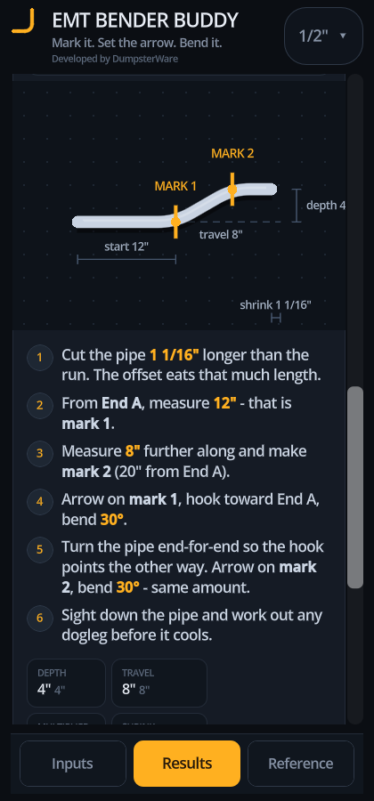
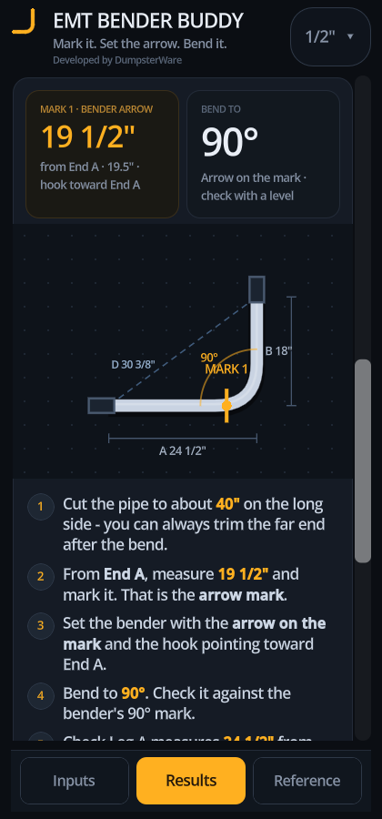
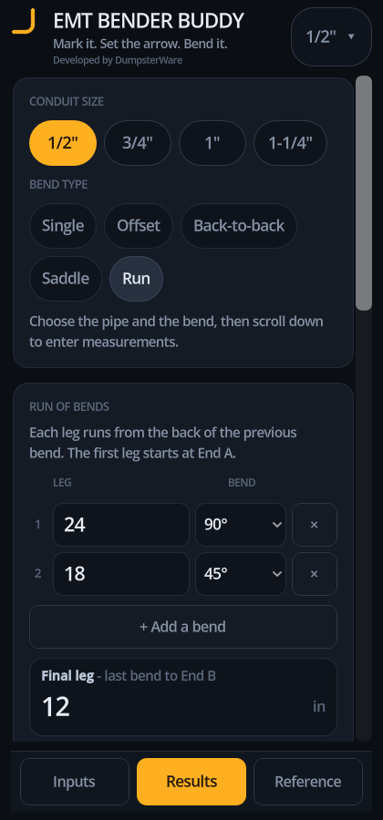
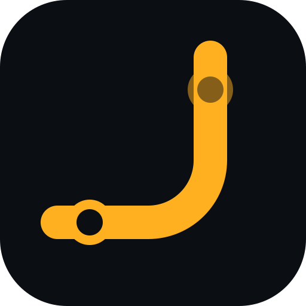

Flagship · Field tool
EMT Bender Buddy
Mark it. Set the arrow. Bend it.
A conduit-bending calculator for electricians. It works out where to mark EMT, which bender mark to line up, how far to bend, and how much length the bend eats — for single bends, offsets, back-to-backs, saddles, and full runs.
- Five modes: Single, Offset, Back-to-back, Saddle, Run
- Live 360° bend budget (NEC 358.26)
- Fraction-friendly inputs and 1/16" marks
- Installable PWA plus a native Godot app
- Web app
- Android
- iOS
- Works offline
Runs in any browser. Install it to your home screen, or build the Godot version for Android and iOS.